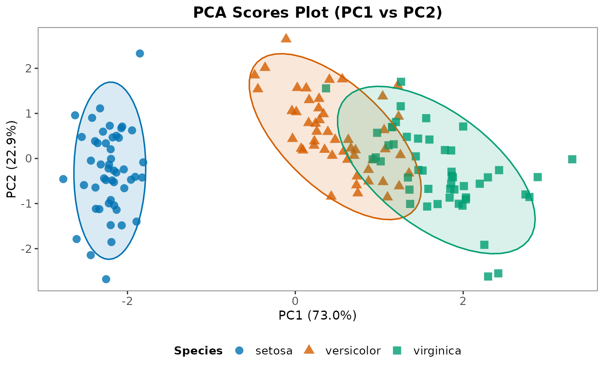
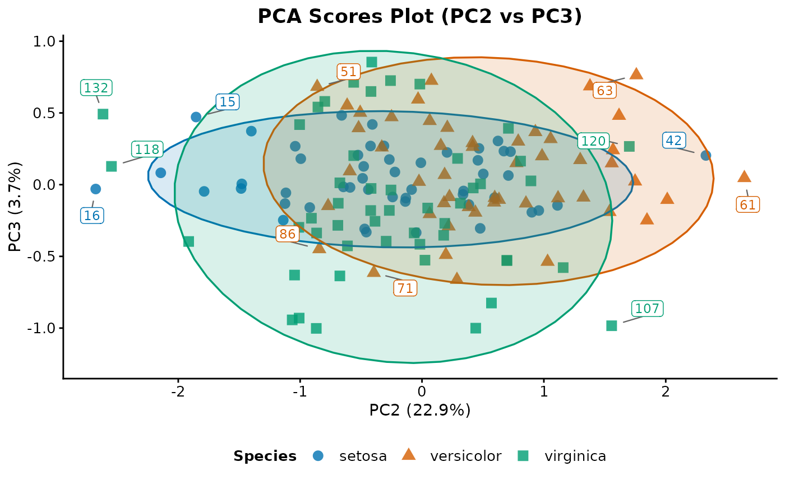

Produces a publication-ready scores plot from the output of multivariate
ordination and dimensionality-reduction methods, including Principal
Component Analysis (run_pca), Partial Least Squares and PLS-DA
(run_pls), and Principal Coordinate Analysis (run_pcoa).
Supports discrete group coloring with confidence ellipses, continuous
gradient coloring, outlier detection and labeling, and a range of
publication themes.
Usage
plot_score(res, ...)
# S3 method for class 'run_pca'
plot_score(
res,
pc = c(1, 2),
color_by = NULL,
points_from = NULL,
title = NULL,
subtitle = NULL,
caption = NULL,
position = "center",
arrange_levels = NULL,
ellipse = TRUE,
ellipse_type = "t",
ellipse_level = 0.95,
legend = NULL,
legend_position = "bottom",
show_outliers = FALSE,
label_outliers = "all",
outlier_margin = 1,
show_groups = NULL,
colors = NULL,
point_size = 3,
point_alpha = 0.8,
theme = "nature",
base_size = 11,
font_family = "",
title_size = NULL,
subtitle_size = NULL,
xlab_size = NULL,
ylab_size = NULL,
axis_text_size = NULL,
legend_size = NULL,
label_size = NULL,
verbose = FALSE,
...
)
# S3 method for class 'run_pls'
plot_score(res, pc = c(1, 2), title = NULL, subtitle = NULL, ...)
# S3 method for class 'run_pcoa'
plot_score(
res,
pc = c(1, 2),
color_by = NULL,
points_from = NULL,
metadata = NULL,
title = NULL,
subtitle = NULL,
...
)
# Default S3 method
plot_score(res, ...)Arguments
- res
List. Output from
run_pca(),run_pls(), orrun_pcoa(). The appropriate plot method is selected automatically via S3 dispatch based on the class ofres.- ...
Additional arguments passed to methods.
- pc
Character vector of length 2. Principal components to plot, e.g.,
c("PC1", "PC2"). Can also be numeric, e.g.,c(1, 2). Default:c(1, 2).- color_by
Character. Name of the metadata column used to colour points. Categorical columns give discrete groups with optional confidence ellipses; numeric columns give a continuous gradient. Default
NULLuses thegroupcolumn of the fittedrun_pca()orrun_pls()model (required forrun_pcoa()).- points_from
Character. Name of the metadata column holding sample labels, used when labelling outliers. Default
NULLuses the sample (row) names.- title
Character. Main plot title. Default: auto-generated based on PCs.
- subtitle
Character. Plot subtitle. Default:
NULL(no subtitle).- caption
Character. Plot caption (bottom-right). Default:
NULL(no caption).- position
Character. Horizontal alignment of title, subtitle, and caption. Options:
"left","center","right". Default:"center".- arrange_levels
Character vector. Custom order for group levels in legend (only applies to categorical
color_by). Default:NULL(alphabetical order).- ellipse
Logical. Draw confidence ellipses around groups. Only applies when
color_byis categorical. Requires at least 3 samples per group. Default:TRUE.- ellipse_type
Character. Type of ellipse:
"t"(t-distribution, default) or"norm"(normal distribution). Default:"t".- ellipse_level
Numeric. Confidence level for ellipses (0-1). Default:
0.95.- legend
Character or
NULL. Custom legend title. Default:NULL(usescolor_bycolumn name).- legend_position
Character. Position of the legend. Options:
"bottom","top","left","right","none". Default:"bottom".- show_outliers
Logical. Label samples outside the confidence ellipse defined by
ellipse_level. Only works when ellipses are drawn (categorical coloring). Default:FALSE.- label_outliers
Character. Which groups to check for outliers. Use
"all"(default) or a character vector of specific group names from thecolor_byvariable.- outlier_margin
Numeric. Multiplier applied to the Mahalanobis squared-distance threshold that exactly matches the drawn
stat_ellipseboundary (same covariance estimator and critical value formula). Default1.0labels any sample that falls outside that boundary. Values > 1 require the sample to be proportionally farther beyond it:1.0to1.5labels most ellipse-breaching samples;1.5to3.0labels clearly separated samples;> 3.0labels only extreme outliers.- show_groups
Character vector or
NULL. Subset of group values fromcolor_byto include in the plot. Samples not inshow_groupsare hidden. Default:NULL(all groups plotted). Only applies whencolor_byis categorical. When supplied, axis labels are removed because variance explained is computed on the full dataset, not the shown subset.- colors
Character vector. Custom color palette for discrete groups. If
NULL(default), the Okabe-Ito colorblind-friendly palette is used. Ignored whencolor_byis numeric (continuous scale is always used for numeric variables).- point_size
Numeric. Size of points. Default:
3.- point_alpha
Numeric. Transparency of points (0-1). Default:
0.8.- theme
Character. ggplot2 theme to apply. Options:
"nature","classic","plos","minimal","bw","light","dark","gray". Default:"nature"(a clean, publication-ready style based ontheme_bw()).- base_size
Base font size in points; every text element scales from it. Default:
11, which suits a default 7 x 5 inch Quarto figure.- font_family
Character. Font family for all text elements. Default:
""(the graphics device's default).- title_size, subtitle_size, xlab_size, ylab_size, axis_text_size, legend_size, label_size
Font sizes in points for the title, subtitle, x-axis label, y-axis label, tick labels, legend and outlier labels. Default
NULLderives each frombase_size.- verbose
Logical. Print progress messages. Default:
FALSE.- metadata
A
data.framewith one row per observation (sample). Used byplot_score.run_pcoa; defaults to the metadata stored byrun_pcoa()when it was given one. Row order must match the row order of the data matrix originally passed torun_pcoa().
Details
Scores Plot Interpretation:
Clustering: Samples that cluster together have similar metabolic profiles.
Separation: Distance between groups indicates metabolic differences.
Outliers: Samples far from their group may represent biological outliers, technical issues, or mislabeled samples.
Coloring Options:
The color_by parameter determines how points are colored:
Categorical column: Colors by discrete groups (e.g., Treatment, Genotype).
Points are both colored and shaped by this variable.
Confidence ellipses can be drawn with
ellipse = TRUE.Outliers can be detected and labeled.
Colors default to the Okabe-Ito colorblind-safe palette; override with
colors.
Numeric column: Gradient coloring by continuous variable (e.g., Time, Dose, Age).
Uses the viridis "plasma" color scale.
Points are shaped by the same variable (binned into quartiles).
No ellipses or outlier detection available.
Color Defaults:
By default, discrete groups use the Okabe-Ito palette, which is perceptually
distinct and safe for the most common forms of color vision deficiency (deuteranopia,
protanopia, tritanopia). The palette supports up to 8 groups. For more than 8 groups,
supply a custom colors vector.
Point Labeling:
The points_from parameter controls how samples are labeled:
If the specified column exists in metadata, those values are used as labels.
If the column doesn't exist, sequential labels (
Sample_1,Sample_2, ...) are used.Labels are shown when
show_outliers = TRUEfor outlier samples only.Common choices:
"Sample","SampleID","SubjectID".
Outlier Detection:
Outliers are identified using Mahalanobis distance from the group centroid.
A sample is flagged as an outlier if it falls outside the confidence region defined
by ellipse_level. The default (0.95) identifies samples outside the 95% confidence
region. This exactly mirrors ggplot2::stat_ellipse() behavior.
Outlier detection requires:
Categorical
color_byellipse = TRUEAt least 3 samples per group
Sample Exclusion:
To exclude samples (e.g., QC samples) from the plot, exclude them during PCA
computation using run_pca(exclude = ...) rather than filtering at the plot stage.
Themes:
The "nature" theme (default) is a clean, publication-ready style with a white
background, minimal gridlines, and no top/right panel border - suitable for
journal figures. Other options map directly to their ggplot2 equivalents.
References
Mardia, K.V., Kent, J.T., & Bibby, J.M. (1979). Multivariate Analysis. London: Academic Press.
Brereton, R.G., & Lloyd, G.R. (2014). Partial least squares discriminant analysis: taking the magic away. Journal of Chemometrics, 28(4), 213-225. doi:10.1002/cem.2609
Okabe, M., & Ito, K. (2002). Color Universal Design (CUD): How to make figures and presentations that are friendly to colorblind people. https://jfly.uni-koeln.de/color/
Examples
meta <- data.frame(Sample = rownames(iris), Species = iris$Species)
pca <- run_pca(scale(iris[, 1:4]), meta, group = "Species", verbose = FALSE)
plot_score(pca, color_by = "Species", points_from = "Sample")

# PC2 vs PC3, classic theme, outliers flagged
plot_score(pca, pc = c(2, 3), color_by = "Species", points_from = "Sample",
show_outliers = TRUE, theme = "classic")
